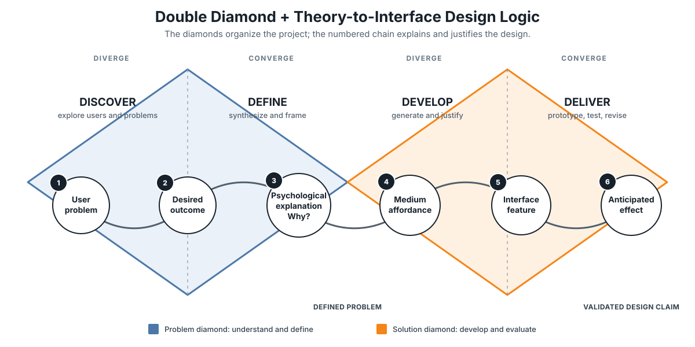

MAE4001 Class Project Overview¶
Class Project: User Research and Technology Design¶
In this class project, your team will experience a theory-informed communication technology design process. This project comprises of three project stages, where different in-class activities are housed. Across these stages, you will identify a meaningful user problem, investigate the experiences and needs of intended users, connect user evidence and socio-psychological theories to develop a technology-based response, and create and evaluate a functional prototype. You will submit three project deliverables on Weeks 7, 11, and 16 and do the final presentation at the end of the semester.
The project follows the Double Diamond method: Discover and Define the user problem, then Develop and Deliver a design response.

General Requirements¶
- Note that your project deliverables are not conventional prose reports. They may combine concise written explanations with research, design artifacts, prototypes, and other materials specified in the instructions.
- Follow the specific generative-AI boundaries stated in each deliverable's instructions. Disclose AI use as required and take responsibility for all submitted claims, design decisions, content, and code.
- Make sure to always cite research and other external sources using the format required in class.
- Requests for deadline extensions must be communicated in advance and supported by reasons recognized under university policy.
Project Stage 1: User Research and Problem Definition¶
Goals¶
In this stage, your team will discover and define a meaningful user problem before proposing a technological solution. The problem may be a recurring inconvenience in everyday life or a more consequential social challenge, such as loneliness and social isolation among older adults or difficulties experienced by young job seekers. In either case, your team should be able to explain why it is socially important and meaningful to address the problem for the intended users. In this stage, you will do the following:
- Identify a problem space and intended users
- Begin with observations of everyday life and identify a user group, context, and problem worth investigating.
- Frame the problem without assuming that technology is necessarily the solution.
- Gather and synthesize user evidence
- Conduct background research and interview intended users to understand both the broader context of the problem and their lived experiences.
- Organize the evidence to identify user needs, recurring patterns, and important insights using a design-thinking method.
- Define the user problem
- Use the synthesized user evidence to develop a POV (point of view) statement and How Might We question.
In-Class Activities¶
The following in-class activities will guide you through this stage: 1. Week 2: Problem Discovery and Team Selection 2. Week 3: User Interview Planning 3. Week 5: Affinity Mapping and Problem Definition
Deliverable #1: User Research and Problem Definition Brief¶
Due by Week 7. Detailed instructions and evaluation criteria will be provided separately.
Project Stage 2: Theory-Informed Solution Development¶
Goals¶
In this stage, your team will move from defining the user problem to developing a theory-informed technological response. You will use insights about the users and relevant psychological theories to generate solution concepts, select an appropriate technological medium, and develop interface features intended to address the defined problem.
- Develop theory-informed solution concepts
- Identify psychological theories or mechanisms that offer useful insights into the intended users and their experiences.
- Generate and compare multiple solution concepts before selecting a concept and technological medium.
-
Translate the relevant theoretical insights into an interface design strategy.
-
Develop a user scenario and critical task flow
- Create a concrete scenario showing when, why, and how an intended user would engage with the proposed technology.
- Identify one critical user pathway that the functional prototype will demonstrate.
In-Class Activities¶
- Week 9: Design Concept Studio
- Week 10: User Scenario and Task Flow
Deliverable #2: Theory-Based Design Proposal¶
Due by Week 11. Detailed instructions and evaluation criteria will be provided separately.
Project Stage 3: Prototyping, Evaluation, and Revision¶
Goals¶
In this stage, your team will give concrete form to the design of your proposed technological solution, exchange peer feedback, and revise the proposed design and revise it using peer feedback. The goal is not to build a complete product, but rather to materialize the design idea, and discover interaction problems as well as unintended issues that may not have been visible or expected during the previous stages.
- Develop and critique a low-fidelity prototype
- Translate the critical task flow into a low-fidelity representation of main features.
- Use design critique to identify unclear interactions and improve the pathway.
-
Gather peer feedback to identify problems and make revision decisions.
-
Create a functional prototype
- Build a focused, workable implementation of the critical user pathway based on the peer feedback.
In-Class Activities¶
- Week 11: Low-Fidelity Prototyping and Critique
- Week 12: Functional Prototyping Studio
Deliverable #3: Functional Prototype and Design Case¶
Due by Week 16. Detailed instructions and evaluation criteria will be provided separately.
Final Presentation and Individual Accountability¶
Each team will present its user problem, design rationale, functional prototype, and major learning from the development and evaluation process. Presentation requirements will be provided separately.
Each student will also submit an individual contribution statement and a confidential peer evaluation. These may be used to adjust individual grades when there is evidence of substantially unequal participation.